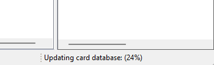

ManaDesk's card database comes from Scryfall: every card, every printing, with images, rulings, legality and prices. Update it now and then to get the new sets, the latest legality changes and fresh prices.
Choose (also in the Scryfall Database view's menu).

tells you whether Scryfall has newer data than yours. ManaDesk can also check at every start: Check for new cards on startup in .
On a computer without internet access:
.json, .jsonl or .jsonl.gz).If part of the card data is missing (for example after an interrupted update), ManaDesk notices it at startup and repairs it in the background.
See also: Prices · First start · Backups